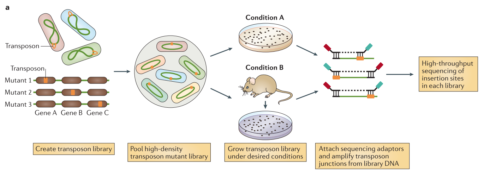
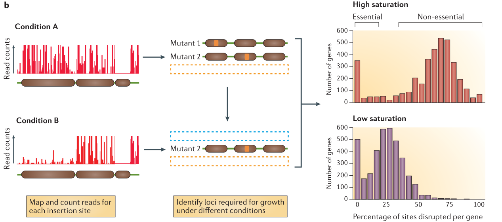

Essential genes detection with Transposon insertion sequencing
Contributors
Questions
What is Transposon insertion Sequencing?
How to get TA sites Coverage ?
How to predict essential genes ?
Objectives
Understand the read structure of TnSeq analyses
Predict Essential genes with Transit
Compare gene essentiality in control sample and an different experimental condition
Motivation
Transposon insertion sequencing is a technique used to functionally annotate bacterial genomes. The genome is saturated by transposon insertions. The insertion of a transposon being disruptive for the region, the analysis of insertion frequency provides information on how the bacteria fitness change due to this disruption :
- An insertion mutant with lower fitness decrease frequency in the population
- An increased fitness lead to increased frequency in the population
Speaker Notes
Identifying the impact of mutations on bacterial fitness allows to classify certain gene as essential for the bacteria in different conditions.
Transposon insertion sequencing method
Data production
.center[
From Chao et al.]
Speaker Notes The initial population genomes are mutated so that the genome is saturated with transposon insertions. A library is saturated if in the genomes across the whole population of bacteria, each potential insertion site has at least one insertion. The population is then divided into several media containing different growth conditions. After growth, the regions flanking the insertion are amplified and sequenced, allowing to determine the location of the insertion.
Analysis
.center[ 
From Chao et al. ]
Speaker Notes
After alignement to the reference genome, the resulting data will show a discrete repartition of reads on each TA site. If a gene present several insertions, like the two leftmost genes in Condition A, it means that its disruption has little or no impact to the bacterial growth. On the other hand, when a gene shows no insertions at all, like the rightmost gene in Condition A, is means that any disruption in this gene killed the bacteria, meaning its a gene essential to bacteria survival. If the library is sufficiently saturated, there is a clear threshold between essential and non-essential genes when you analyze the insertion rate per gene.
Note:
.left[
- Gene disruption, where we analyze only the disruptions. (The object of this tutorial)
- Regulatory element insertion, where different promoters are inserted by the transposon, and we analyze the change in gene expression in addition to the disruption. (Will be the subject or another tutorial) ]
Experiment parameters
Types of transposon
-
Randomly pooled tranposon :
- Mariner-based transposons, which target TA dinucleotides
- The TA are distributed relatively evenly along genome, which allows to impact statistically every gene
- There is in average more than 30 insertions site per kb
- The local variations means less loci and less statistical power
-
Advantages: low insertion bias, easy to build saturated libraries
- Tn5-based vectors, which insert at random sites
- Require no target sequences
- It has a preference for high GC content, causing insertion bias
-
Useful for specie where it is difficult to build mariner based transposons
- Mariner-based transposons, which target TA dinucleotides
- Defined sequence transposon
- Can be used to study interactions in pathways of interest
- More precise targeting (small genes, pathways) for specific analyses
Speaker Notes
In this tutorial, we are using mariner transposon, that target TA sequences.
Library complexity
- Large complexity means multiple insertion in every potential locus.
- The higher density of insertion you have, the greater precision you have in identifying limits of regions of interest
- If the density of the library is too low, some genes might not be disrupted by chance and mistaken for essential
Speaker Notes
The advantage of a target specific transposon, like the mariner, in opposition of a Tn5-based transposon inserting randomly, it that the limited number of insertion sites makes it easier to build high complexity libraries.
Structure of the tranposon constructs
Desired Properties of the constructs
-
It needs to allow insertion site amplification and sequencing.
-
Uneven fragment size could instroduce amplification biases. To avoid this problem, we can introduce a Type I restriction site to cleave DNA downstream of transposon for uniform fragment sizes
-
A minimum red length of 16 bp is necessary for precise mapping on the genome (Kwon and al. 2016). We can therefore use the MmeI restriction site (21pb) but not BsmFI (11 to 12 bp).
Speaker Notes
- It needs to allow insertion site amplification and sequencing to get a library representative of the tranposon insertion.
- Uneven fragment size could instroduce amplification biases. To avoid this problem, we can introduce a Type I restriction site to cleave DNA downstream of transposon for uniform fragment sizes
- A minimum red length of 16 bp is necessary for precise mapping on the genome (Kwon and al. 2016). We can therefore use the MmeI restriction site (21pb) but not BsmFI (11 to 12 bp). It is not important in that case to have longer reads as we do not care to have a good coverage on the entire genome, the only information we need is the Ta site affected by an insertion, to do that we only need the location of the start of the reads.
Structure of the modified mariner transposon Himar1
.center[

From Santiago et al. ]
Speaker Notes
- ITR junctions : Insertion sites.
- Mme1 restriction site (cut 21 bp upstream from the restriction site) and NotI restriction sites are the 5’ and 3’ limits to the genomic DNA we want to sequence.
- A. Sequence flanking genomic regions After digestion by NotI restriction enzyme, the fragments are attached to biotinylated adaptors that link to NotI restriction site. The attached fragment are then digested by MMeI at a site upstream , where an Illumina primer is then linked. The sequencing is then done, adding Illumina adaptors and an additional barcode to the read for multiplexed sequencing.
- B. Removing incorrect fragments An insertion can sometimes be composed of one or more copies of the transposon (multimer). There is therefore a risk to select plasmid backbone sequence. To solve this problem, an additional NotI has been add in the backbone to create different length construct, that can later be filtrated (D).
- D. Different promoters are added to the construct along with an additional 3 bp barcode
Note: Because of this complex tranposon structure, the reads obtained after sequencing contain a large portion of tranposon sequence for a 16-17 bp genomic sequence. This will necessitate several step of pre-processing to extract this genomic sequence.
Tnseq analysis
Speaker Notes With the count of insertions at every insertion site, there is several methods existing to identify essential genes of regions. They can be divided in two major categories :
- Annotation dependent : The read counts and/or insertion frequency are calculated across defined regions (genes, promoters … )
- Annotation independent : The read counts and/or disrupted sites are considered across the whole genome, independently of defined structures.
Methods of Analysis
.center[

From Chao et al. ]
Speaker Notes
Annotation dependent method The total read count an/or percentage of disrupted site are computed per annotated regions. The values are then compared to the rest of the genome to classify the genes into the categories essential or non-essential. Annotation independent method The total read count and/or disrupted sites are computed independently of annotated regions. One of these methods is using a sliding window. Each window is then classified into the categories essential or non-essential. After the windows have been classified, they are linked annotations, and the genes/regions can be classified as essential, non-essential, or domain essential according to the classification of the windows they cover. The same classification can be done using HMM based methods instead of sliding windows. In that case, each insertion site will be predicted as essential or non essential. From Chao et al.
TRANSIT Tool
.left[
- Tool for Essentiality Prediction
- From TA sites read counts
- Different analysis methods :
- Gumbel : Gene Level Prediction
- HMM : Region level prediction
- Re-Sampling : Gene Level Prediction, Sample Comparison ]
From DeJesus et al.
Speaker Notes
We are presenting only the Himar1 methods, other tn5 specific methods existing
Gumbel The Gumbel can be used to determine which genes are essential in a single condition. It does a gene-by-gene analysis of the insertions at TA sites with each gene, makes a call based on the longest consecutive sequence of TA sites without insertion in the genes, calculates the probability of this using a Bayesian model.
HMM The HMM method can be used to determine the essentiality of the entire genome, as opposed to gene-level analysis of the other methods. It is capable of identifying regions that have unusually high or unusually low read counts (i.e. growth advantage or growth defect regions), in addition to the more common categories of essential and non-essential.
Re-sampling The re-sampling method is a comparative analysis the allows that can be used to determine conditional essentiality of genes. It is based on a permutation test, and is capable of determining read-counts that are significantly different across conditions.
Workflow of Analysis of Tnseq Data
Agenda : From reads to essential genes annotations
- Removing all non genomic sequences from the sequenced reads
- Data Structure
- Separating reads from different experimental conditions
- Removing Adapter sequence
- Separate reads from different transposon constructs
- Removing remaining transposon sequence.
- Counting the number of insertion per TA sites
- Aligning the reads to a reference genome
- Getting coverage of the genome
- Getting TA sites positions
- Merging overall coverage and TA sites to get the coverage of each TA sites
- Predicting Essential Genes with Transit
- Predict the essentiality of genes
- Understand the output
1. Removing all non genomic sequences from the sequenced reads
.left[#### 1. Data Structure]

Speaker Notes
The experimental design of transposon insertion sequencing produces raw reads containing a lot of adapters and foreign sequences that has been used to insert and target the transposon. In order to obtain the core reads that contain only genomic sequence, we have a number of steps to do to remove them and divide the reads per experimental condition and type of transposon.
| The pre-processing of the data will be done through several steps of Cutadapt software, first we sill separate the reads of each experimental condition based on a 8 bp barcode at the beginning of the read (Illumina demultiplexing). The tail of each set of read is then removed. It immediately follows the 3bp barcode specific to transposon constructs, and contains illumina adapter sequence and downstream. To be sure all our reads have been trimmed correctly we filter out the reads too large. We then separate the reads per transposon construct and then remove the remaining transposon sequence containing MmeI. |
1. Removing all non genomic sequences from the sequenced reads
2. Separating reads from different experimental conditions
We start by dividing the initial data set by experimental conditions thanks to a 8bp barcode added by the Illumina multiplexing protocol. To do that we use Cutadapt with the fastq faile containing the reads and a fasta file containing the barcodes for each condition :
.center[ Barcode data:
>control
^CTCAGAAG
>condition
^GACGTCAT
]
The ‘^’ at the beginning of the sequence means we want to anchor the barcode at the beginning of the read. To know more about the symbols used by cutadapt, see cutadapt manual
Speaker Notes The output is a collection of the different conditions dataset, here control and condition, and a report text file. You can look at the report and see that 100% of the reads has been trimmed.
1. Removing all non genomic sequences from the sequenced reads
3. Removing Adapter sequence
- Trimming the tail containing the illumina adapter. To remove the adapter and everything downstream, we use the end adapter option of cutadapt and don’t anchor the sequence anywhere.
- Filter the reads by size
4. Removing Adapter sequence
- The constructs used in this experiment contain different strengths and directions of promoters. This constructs are marked by 3bp barcodes. (The separated set of reads will be use as replicate here)
5. Removing remaining transposon sequence
- Removal of the linker containing the MmeI restriction site.
Speaker Notes
To remove the reads that might not have been trimmed because of too many mismatches or other reasons, we will then filter the reads by size. Because we know the approximate size of the remaining sequences, we can filter the reads based on this estimation.
4.
We have now removed the transposon sequences that was outside of the 3 bp barcode specific to the type of construct. The constructs used in this experiment contain different strengths and directions of promoters. It means that in addition of disrupting a gene at the location of the insertion, it will modify the expression of either upstream or downstream regions. The analysis of this modification will be studied in another training material, but for now we will consider it does not impact the essentiality analysis and we will use the different constructs as replicates. We therefore need to separate the reads based on the construct specific 3bp barcodes.
All these steps are performed with the Cutadapt tool
2. Counting the number of insertion per TA sites
1. Aligning the reads to a reference genome
-
The first step is to map our read to the reference genome. We are using the tool Bowtie. We could also use Bowtie2 with an end-to-end option, but Bowtie is more suitable for very short reads like ours (16-17 bp).
-
We are strictly enforcing a no mismatch mapping in the bowtie parameters :
- Our reads being very short, the smallest size allowing precise mapping, allowing even one mismatch would risk having reads mapping in wrong positions.
2. Counting the number of insertion per TA sites
2. Getting coverage of the genome
- Now that we have mapped the reads on the reference genome, we need to calculate the coverage of the genome to later cross them with our TA sites position.
.center[
 ]
]
- We are using the tool BamCoverage with an offset of
-1
Speaker Notes
In our case, the reads cover the flanking region on one side of the TA site where the transposon inserted. That means we do not want to have the coverage across the whole reads, as it could cover several TA sites, but only the coverage at the end of the read.
The sequenced read cover the 5’ region flanking the site of insertion. To assign the read to its correct insertion, we need to compute the coverage at the 3’ end of the read.
2. Counting the number of insertion per TA sites
3. Getting TA sites positions
-
We are considering both strands together and therefore reporting all counts to the leftmost position of the TA sites.
- The first step is to get the TA sites coordinates using Wordmatch, wich provides us with three outputs:
- A file containing the locations where the TA sites maps on the Genome
- A file containing the locations where the Genome maps on the TA site
- A report file
- We use a succession of small operations using the Cut and Compute tools to extract two files :
- A file with the 5’ coordinate of each TA site of the Forward Strand
- A file with the 5’ coordinate of each TA site of the Reverse Strand
Speaker Notes
As we are not considering strand separately in this analyses, we will consider both count as attached to the leftmost base of the TA site. To do that we will create two list of TA site positions, listing the 5’ end of each TA site for forward and reverse strand, and then merge them to get a global count per TA site.
In order to get the coverage on each TA site we need to prepare a file containing the position of each TA site. Depending on the direction of insertion the coverage will be counted on the leftmost position of the TA site or on the rightmost. As we are not considering strand separately in this analyses, we will consider both count as attached to the leftmost base of the TA site. To do that we will create two list of TA site positions, listing the 5’ end of each TA site for forward and reverse strand, and then merge them to get a global count per TA site.
The coordinates provided by wordmatch are based on count 1. Meaning the first nucleotide is counted as number 1. However, bamCoverage count the first nucleotide as nucleotide number 0. To be able to compare the two results, we need to shift the TA site positions by 1.
2. Counting the number of insertion per TA sites
4. Merging overall coverage and TA sites to get the coverage of each TA sites
- We use the Join tool to join the coverage and the TA sites coordinates on the genomic positions. We then get :
- The coverage of TA sites on the Forward Strand reported on the leftmost base
- The coverage of TA sites on the Forward Strand reported on the rightmost base
- We add the counts of both strand and report the total on the leftmost position of the TA site :
- We know have a count of insertions at every single site.
Speaker Notes
Now that have the files containing the coordinates of our TA sites for both strands. We will cross them with the coverage files to get the coverage on both sides of each TA site.
We now have a read count for each nucleotides of the TA sites. The insertions counted in the forward strand files are in a different direction than those counted on the reverse strand file. In our case, we are only interested in studying the gene disruption, and therefore we do not want to consider the directions separately. We will add the forward and reverse count together to get a total count per TA site. In order to do that we need to assign the count of both strand to the same nucleotide. We will do that by shifting by one position the count on the reverse strand.
3. Predicting Essential Genes with Transit
1. Predict the essentiality of genes with Transit
The output of Transit is a tabulated file containing the following collumns (you can find more information on Transit manual page):
- Gene ID
- Name of the gene
- Gene description
- Number of Transposon Insertions Observed within the Gene
- Total Number of TA sites within the Gene
- Length of the Maximum Run of Non-Insertions observed (in number of TA sites)
- Span of nucleotides for the Maximum Run of Non-Insertions
- Posterior Probability of Essentiality
- Essentiality call for the gene : E=Essential, U=Uncertain, NE=Non-Essential, S=too short
We can obtain the list of genes predicted as essential by filtering on the essentiality call.
Speaker Notes
Now that we have the counts of insertions per TA site, we can use them to predict gene esssentiality with Transit. In order to do that, we need to create a an annotation file in the prot_table format, specifique to the Transit tool. You can create this file from a gff3 from GenBank.
Now that we have prepared the annotation file, we can use the count per TA site to predict essential genes using Transit tool. We will modify a couple parameters from the default settings :
- We want to ignore counts lower than 2, in order to reduce the number of sites presenting a single read, which could be artefactual.
- We want to ignore insertion near the extremities of the genes. A disrupted site that would be very close to the border of the gene may not actually disturb the gene function, and therefore not be an actual signal of disruption.
3. Predicting Essential Genes with Transit
2. Understand the output
.left[
- FDR Corrected thresholds: 0.992500, 0.055350
- MH Acceptance-Rate: 38.48%
- Total Iterations Performed: 20999
- Sample Size: 20000
- phi estimate: 0.481177
- Time: 584.757580996
| Orf | Name | Desc | k | n | r | s | zbar | Call |
|---|---|---|---|---|---|---|---|---|
| SAOUHSC_00002 | - | DNA polymerase III subunit | 2 | 96 | 94 | 1102 | 1.000000 | E |
| SAOUHSC_00008 | - | histidine ammonia- | 54 | 128 | 8 | 95 | 0.000000 | NE |
| SAOUHSC_00028 | - | hypothetical protein | 8 | 18 | 4 | 24 | -1.000000 | S |
| SAOUHSC_00227 | - | hypothetical protein | 21 | 162 | 24 | 267 | 0.970900 | U |
]
Speaker Notes
ORF Gene ID.
Name Name of the gene.
Description Gene description.
k Number of Transposon Insertions Observed within the ORF.
n Total Number of TA dinucleotides within the ORF.
r Length of the Maximum Run of Non-Insertions observed.
s Span of nucleotides for the Maximum Run of Non-Insertions.
zbar Posterior Probability of Essentiality.
Call Essentiality call for the gene. Depends on FDR corrected thresholds. E=Essential U=Uncertain, NE=Non-Essential, S=too short
Note: Technically, Bayesian models are used to calculate posterior probabilities, not p-values (which is a concept associated with the frequentist framework). However, we have implemented a method for computing the approximate false-discovery rate (FDR) that serves a similar purpose. This determines a threshold for significance on the posterior probabilities that is corrected for multiple tests. The actual thresholds used are reported in the headers of the output file (and are near 1 for essentials and near 0 for non-essentials). There can be many genes that score between the two thresholds (t1 < zbar < t2). This reflects intrinsic uncertainty associated with either low read counts, sparse insertion density, or small genes. If the insertion_density is too low (< ~30%), the method may not work as well, and might indicate an unusually large number of Uncertain or Essential genes.
Take Home
- TnSeq use Tranposon insertion to identify Gene essential in different conditions
- Based on insertion sites count. Whole genome coverage is not important.
- Be aware of your library saturation: A saturation too low will give you a lot of false essential Genes
- Do not Accept Mismatches in your alignements when working with very short reads
- Be careful when you use different tools based on genomic positions, some tools start at position 1, or 0
Thank you!
This material is the result of a collaborative work. Thanks to the Galaxy Training Network and all the contributors! Tutorial Content is licensed under
Creative Commons Attribution 4.0 International License.
Tutorial Content is licensed under
Creative Commons Attribution 4.0 International License.